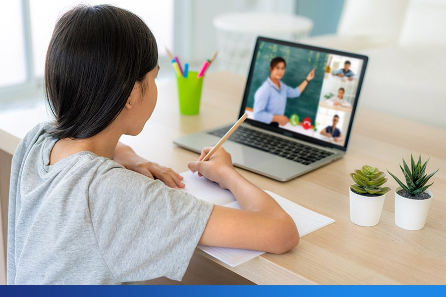

Impacto de las Tecnologías Web en la Sociedad y los Negocios
Transformación social, educación digital, ciudadanía y nuevas formas de comunicación
Transformación de la Sociedad a través de la Web
Educación en línea y democratización del conocimiento
Las plataformas educativas basadas en web, los entornos virtuales de aprendizaje y los recursos educativos abiertos han ampliado el acceso a la formación superior y continua. Según la UNESCO (2023), la digitalización educativa facilita la flexibilidad horaria y reduce barreras geográficas, aunque exige políticas públicas para cerrar la brecha de conectividad en zonas rurales o vulnerables.
Los estudiantes y docentes interactúan mediante foros, aulas virtuales, bibliotecas digitales y evaluaciones en línea, transformando los métodos tradicionales de enseñanza.

Figura 3. Entornos virtuales de aprendizaje y acceso a recursos educativos en la web.
Comunicación, participación ciudadana y brecha digital
Las redes sociales, los portales de noticias y los servicios de gobierno electrónico han modificado la forma en que las personas se informan, debaten y realizan trámites ciudadanos. Sin embargo, persisten desafíos importantes que deben atenderse de manera integral:
Brecha digital de acceso y uso: Diferencias en la calidad de conexión y en las competencias digitales de la población.
Desinformación y privacidad: Necesidad de alfabetización mediática y protección de datos personales en entornos web.
Inclusión y accesibilidad: Diseño de sitios web utilizables por personas con discapacidad visual, auditiva o motriz.
Figura 4. Interacción social y participación comunitaria mediada por tecnologías web.